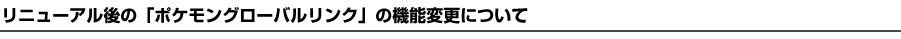
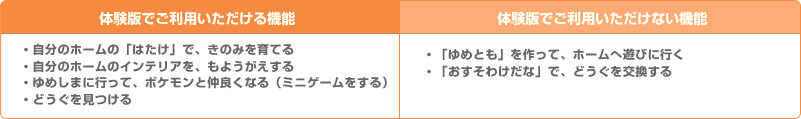
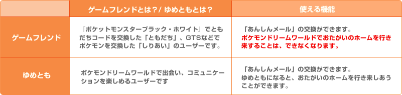

2011年3月4日
株式会社ポケモン
いつも「ポケモングローバルリンク」をご利用いただき、ありがとうございます。
2011年3月より、『ポケットモンスターブラック・ホワイト』の英語・フランス語・イタリア語・ドイツ語・スペイン語の5言語のバージョンが発売されます。
それにともないまして、2010年9月18日（土）より日本でサービスをスタートいたしましたＷｅｂサイト「ポケモングローバルリンク」におきましても、各言語に対応する形でリニューアルオープンさせていただきます。世界のポケモンプレイヤーとつながることにより、さらに広がる「ポケモングローバルリンク」をお楽しみください。
※「ポケモングローバルリンク」リニューアルにともなう、サービス一時休止のお知らせはこちら

記

※時間未定。オープン日は前後する場合があります。
『ポケットモンスターブラック・ホワイト』の各言語対応版（英語・フランス語・イタリア語・ドイツ語・スペイン語・韓国語）の発売に合わせて、「ポケモングローバルリンク」も日本語以外の言語をご利用されるユーザーのためにリニューアルされます。
「ポケモングローバルリンク」日本語版は、引き続き日本にお住まいの方が対象となり、『ポケットモンスターブラック・ホワイト』日本語版に対応したサービスとなります。
※「ポケモングローバルリンク」韓国語版は、大韓民国（韓国）にお住まいの方、英語・フランス語・イタリア語・ドイツ語・スペイン語の5言語版は、その他の国にお住まいの方向けのサービスとなります。 ※世界のポケモントレーナーのポケモン交換状況を確認できる機能「グローバルトレードステーション（ＧＴＳ）」は、2011年夏オープン予定です。


『ポケットモンスターブラック・ホワイト』を持っていなくても、ポケモンドリームワールドで遊ぶことができます。体験版をお楽しみいただく場合、お楽しみいただける機能に制限があります。

「ゆめとも」の機能を再開させていただきます。また、ゲームフレンドとお楽しみいただける機能を下記のとおり変更させていただきます。

- リニューアル後は、これまで行き来できたゲームフレンドのホームへは行けなくなります。
- リニューアルの間に「おすそわけだな」に置かれていたどうぐ・きのみは、誰と交換したのかなどの履歴情報が消えます。
- 2010年9月18日（土）・19日（日）にお楽しみいただいたお客様の「ゆめとも」の情報は、リニューアル前にリセット（消去）させていただきます。
- リニューアル後の「ポケモングローバルリンク」の最初の設定では、すべてのユーザーの方のプロフィールの公開範囲設定が「非公開」になっています。ゆめともを作りたい場合は、リニューアルオープン後に、「プロフィール設定」の公開範囲を「全てのユーザーに公開」に変更してください。
ＧＢＵはリニューアル後、世界のポケモントレーナーの対戦の情報がお楽しみいただけるようになります。そのため、下記のとおり変更させていただきます。
ＧＢＵランキングは約３カ月ごとのシーズン制を導入します。シーズン内で、一定数の対戦をされた方がＧＢＵランキングの対象となります。上位入賞者へは、プロフィールページのアバター等のプレゼントを検討しております。
通信対戦時の切断回数が著しく多いユーザーの方は、ＧＢＵランキング集計の対象外とさせていただきます。
通信対戦時は、ニンテンドーDS本体の十分な充電と、安定したWi-Fi通信環境でのプレイをお願い申し上げます。
※今回の変更にともない、これまでお楽しみいただきましたレーティング・ランキングを、リニューアルオープンに合わせて、すべてリセットさせていただきます。
メンテナンス時間を、リニューアルにともない、下記のとおり変更させていただきます。
| 現在 | 変更後 |
| 毎週火曜日 16時～20時 |
2011年3月8日（火）～ 5月31日（火） 毎週火曜日 16時～水曜日 10時 2011年6月7日（火）～ 毎週火曜日 16時～22時 |
以上